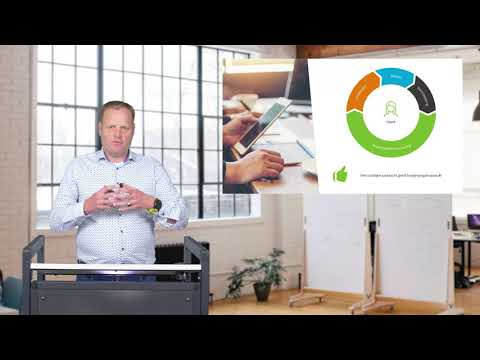

Video's
Instructievideo's, webinars en presentaties over Faster Forward Elements en eBlinqx. Video's worden pas van YouTube geladen als je op afspelen klikt.
Op zoek naar de interactieve instructies? Die staan op de pagina E-learning.
Over Elements en eBlinqx
eBlinqx Explainer
Blinqx
Elements: efficiënt samenwerken met klanten en collega's
FasterForwardTV · 1:06
Instructievideo's
Het Elements dashboard
FasterForwardTV · 3:29
Hoe maak ik een dossier aan
FasterForwardTV · 2:40
Hoe nodig ik een collega uit bij een afspraak
FasterForwardTV · 0:53
Hoe archiveer ik een product
FasterForwardTV · 1:15
Hoe maak ik een factuur aan in Elements?
FasterForwardTV · 2:38
Quinn en AI
Webinars en presentaties
December presentatie nieuwe Elements features
FasterForwardTV · 15:06

Wetgeving en tips voor klantonderhoud door Bureau DFO en Faster Forward
FasterForwardTV · 31:25
Inzicht in omzetcijfers, kan dat makkelijker?
FasterForwardTV · 1:12
Koppelingen met partners
Telefonie integratie met Faster Forward Elements | Dstny
Dstny NL · 1:53
Uwkluis - Veilig Ophalen
Nationale Hypotheekbond · 2:54
Evenementen en podcast
Business Boost - De Podcast - Dennes Roes en Gijs van Hooijdonk
Blinqx Verzekering & Hypotheek · 27:42
Business Boost de podcast afl 2 - Jesse van Ekeren
Blinqx Verzekering & Hypotheek · 46:38
Business Boost - De Podcast - afl 1 Milan Verzijlbergh
Blinqx Verzekering & Hypotheek · 24:45
Faster Forward op de HypoVak 2019
FasterForwardTV · 1:25
Faster Forward gebruikersevenement
FFWDelements · 1:41